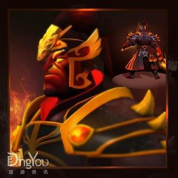
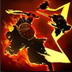
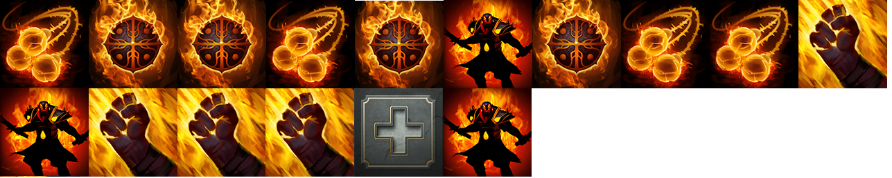

英雄类型：敏捷型英雄
英雄阵营：天辉
力量：19(每级+2)
敏捷：22(每级+1.8)
智力：19(每级+1.8)
生命：511
魔法：260
护甲：1
攻击力：52-56
初始移动速度：310
视野范围：1800/800
攻击距离：近战
基础攻击间隔：1.39
在燃烧要塞中有一口玉石大釜，里面装满了灰烬，这是当年的战争诗人，炘的火葬之地。炘毕生都在卫火盟教导年轻的弟子。后来燃烧之神被炘的师德所打动，下凡来到要塞中，重新点燃了灰烬。余烬之中，炘的样子渐渐成型，四周环绕着火焰。他的面容一如既往的沉静，为了让知识之火燎原，为寻求指引的人提供方向，他已准备就绪。
炎阳索:灰烬之灵释放出火焰绳索来缠绕住附近的敌人，将他们困于原地并每秒造成一定伤害。炘之严训，炽链相伴。
魔法消耗：110
冷却时间：14/12/10/8
技能：无目标
伤害类型：魔法
持续时间：1 / 2 / 2 / 3
每秒伤害： 80 / 60 / 120 / 100
绳索数量： 2
作用范围
Tips: 将随机选取炘周围的单位作为目标。 不能作用于魔法免疫或隐身单位。 打断持续施法类技能。
无影拳：灰烬之灵以燎原之火的速度横冲直撞，攻击目标区域内所有敌人，随后返回所在位置。对英雄造成额外伤害，对小兵造成的伤害较少。顷刻之间，鞭策众敌。
魔法消耗:50
冷却时间:30/22/14/6
作用范围： 250 / 350 / 450 / 550
对英雄的额外伤害： 20 / 40 / 60 / 80
攻击间隔： 0.2
对小兵伤害降低： 50%
技能： 点目标
伤害类型： 物理
Tips: 在施放技能时作用的目标就已决定。 对目标的攻击每次间隔0.2秒。 炘拥有的攻击特效（如致命一击、重击、分裂、连锁闪电等效果）在技能攻击期间都能生效。 施放无影拳时间可以使用其他技能和物品。
烈火罩：灰烬之灵用火焰之环将自己包裹起来，接下来的魔法伤害将被全部吸收。烈火罩对灰烬之灵周围的敌人造成持续伤害。吸收的伤害超过上限后将失去伤害效果。近身之敌，自讨苦吃。
魔法消耗:80/90/100/110
冷却时间:35
持续时间： 8 / 12 / 16 / 20
作用范围： 400
魔法伤害吸收： 50 / 200 / 350 / 500
每秒造成伤害： 30 / 40 / 50 / 60
技能： 无目标
伤害类型： 魔法
Tips: 魔法伤害的吸收伤害值计算先于任何伤害减免效果。
残焰：灰烬之灵每隔35秒创造出一个残焰，最多拥有3个。释放残焰时，目标地点将产生一个残焰像（速度为灰烬之灵移动速度的2.5倍）。灰烬之灵可以使用“激活残焰”技能，向其中一个残焰像冲去。冲刺过程中依次引爆其他残焰像，造成范围伤害，最后到达指定的残焰像。身怀灵力，重焕教义。
冷却时间:0
残焰上限： 3
残焰恢复时间： 35
伤害： 100 / 150 / 200
作用范围： 450
残焰持续时间： 45
技能： 点目标
伤害类型： 魔法
Tips: 升级大招后即拥有3个残焰（上限数量）。 残焰移动至目标地点的速度是本体的2.5倍。
『技能分析及注意事项』
灰烬之灵的大招，每35秒生成一个。满级时每个残焰造成的伤害为200点的物理伤害，因此只要玩家手速够快，足矣在瞬间放出3个残焰，再进行激活可以打出600的范围物理伤害。这里比较推荐放出2个残焰，留一个作为逃生或者追杀使用。需要注意的是，残焰是可以无视地形的，因此当需要逃生时，完全可以利用地形借以逃脱。而追杀亦是同理，利用残焰，可以飞速的切入到对方后面，再用炎阳索将其困住，接着就是一套连招。
灰烬之灵在团队中的定位为gank或者是一名伪核。其非常灵活的机动性，非常适合当一名ganker，帮助队友在线上取得优势。而其本身在前期并不需要太多资源就能打出非常高的伤害。到了后期在团战中可以作为一个切入对面后排的角色，将对面后排搅个鸡犬不宁那灰烬之灵就算是完成了任务。
灰烬之灵的加点方面推荐为主烈火罩，辅炎阳索，待后期再将无影拳补满。期间有大加大。
前期出装：
带足补给和小圆盾，快速补给出瓶子和鞋子。
中期出装：
灰烬之灵如果中单的话，需要出去带节奏。而身为一个近战敏捷英雄却拥有4个主动技能，对魔法的需求非常的高，所以需要有足够的回复装和属性装来支持。
后期出装：
后期转型伪DPS，利用无影拳短CD的特点，可以在团战前就能很好的消耗敌方的血量。
灰烬之灵的出装方面首先可以将之前的守护戒指合成为王者之戒，接着补出草鞋和大魔棒。然后可以选择将王者之戒合成为天鹰之戒，或者直接出影之灵龛。之后是将草鞋合成为相位鞋，增强自己的攻击力和机动性。到这时候灰烬之灵已经有了非常强的gank能力，只要配合上队友的控制，以及算好炎阳索的使用时机，保证其能捆住对方，那gank的成功率是非常有保障的。
后期的灰烬之灵第一件核心装备我推荐是黯灭，因为之前提到过灰烬之灵的无影拳是可以与攻击特效叠加的，有了黯灭之后无影拳就可以拿来当做是一个范围减护甲的技能来使用，在团战中的效果也非常明显。之后的灰烬之灵出装有两种选择，一种是继续加强输出配合无影拳的效果，可以选择出代达罗斯之殇，或者是使自己肉起来而出龙心。如何选择就交给玩家对场上局势的判断，我个人而言比较推荐继续加强输出，因为灰烬之灵的机动性，可以打出华丽丽的伤害，还能逃生，非常爽快。最后再推荐几件装备供玩家选择，第一件是辉耀，由于辉耀可以与烈火罩相互叠加，那造成的伤害就非常可观，而辉耀增加的攻击力也是灰烬之灵非常需要的。再有就是雷神之锤，与代达罗斯之殇类似，配合无影拳效果非常好，更重要的是有雷神之锤灰烬之灵带线打钱的效果将更加的高。
1.灰烬之灵的配合方面，昆卡是不错的对象，大招幽灵船可以减伤，而昆卡技能的爆发也是灰烬之灵需要的；二者配合可以在瞬间打出非常高的伤害。还有就是与莉娜的配合，首先莉娜是远程，在前期对线可以帮助灰烬之灵弥补手短的劣势，再者莉娜有非常棒的清兵，控制，爆发能力。清兵能力给以让灰烬之灵的炎阳索捆住对面英雄的几率增大。而爆发可控制同样对灰烬之灵的帮助非常大。
2.而克制方面，灰烬之灵最怕的就是沉默效果。例如末日使者与沉默术士就非常克制灰烬之灵，试想一下，当灰烬之灵切入进去中了沉默后无法释放技能再切出来，对于脆皮的灰烬之灵而言，简直是羊入虎口。而应付的方法玩家可以选择后手，或者是直接出黑皇杖，不然非常头疼。